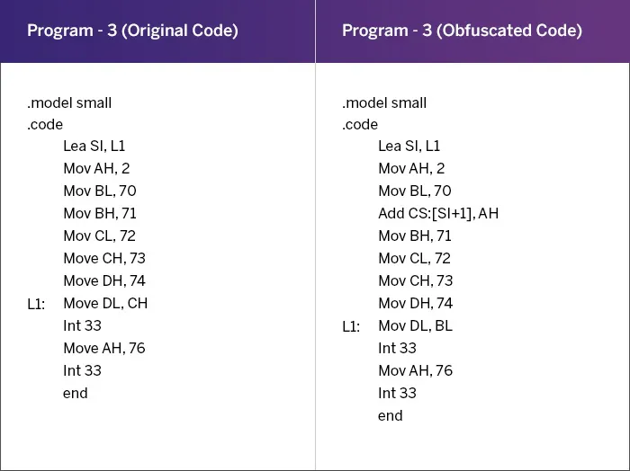

Matéria original: Ofuscação de Código
25 de Agosto, 2021
Legenda: Um guia abrangente para proteger seu código
Figuras de ofuscação de códigos entre uma das técnicas de segurança de aplicativos mais preferidas para se proteger contra a invasão de aplicativos. É uma das iniciativas mais recomendadas do AppSec por profissionais de segurança em todo o mundo e muitas vezes cuida das necessidades mínimas de segurança do seu aplicativo. Na maioria das vezes, essa técnica atua como um mecanismo de defesa primária contra tentativas de hackers e guardas contra ataques comuns, como injeção de código, engenharia reversa e adulteração de informações pessoais de clientes e usuários de aplicativos.
A ofuscação do código é a modificação do código executável para que ele não esteja disponível para compreensão, interpretação e execução. O código fonte em si é ofuscado, de modo que se torna ininteligível e impossível para um terceiro entendê-lo, deixe sozinho executá-lo. A ofuscação do código não afeta a interface do aplicativo destinada ao usuário final ou à saída pretendida do código. É apenas uma maneira de tornar o código inutilizável para um hacker em potencial, que pode colocar as mãos sobre o código executável de um aplicativo.
A ofuscação de código é particularmente útil para aplicativos de código aberto, que representam uma enorme desvantagem em termos de hackabilidade de código para ganhos pessoais. Ao tornar um aplicativo difícil de reverter o engenheiro, os desenvolvedores garantem que a propriedade intelectual de seu produto seja protegida contra ameaças à segurança, acesso não autorizado e descoberta de vulnerabilidades de aplicativos. Esse processo restringe o acesso malicioso ao código fonte e, dependendo do tipo de técnica de ofuscação implementada, garante níveis variados de proteção de código. O tempo, o custo e o fator de recurso inclinam a escala em favor de abandonar o código quando ele é ofuscado, uma vez que o código descompilado é ininteligível.
A ofuscação atua em vários níveis – é aplicada tanto no nível da estrutura semântica/estrutura de código léxico ou no nível de estrutura de dados/fluxo de controle. As técnicas de ofuscação também variam de acordo com a operação que realizam no código. Essencialmente, a equipe de segurança, em consulta com a equipe de desenvolvimento, decide que tipo de ofuscação empregar no código.
Esta técnica envolve nomear variáveis confusamente para que a intenção original de usá-las seja inteligentemente mascarada. Métodos e variáveis são renomeados usando diferentes notações e números, o que dificulta que os decompiladores entendam o fluxo de controle. Esta técnica de ofuscação é geralmente usada para ofuscar o código de aplicativos desenvolvido nas plataformas Java, .NET e Android. Isso se enquadra na categoria geral de ofuscação de layout, visando o código-fonte diretamente para trazer uma camada de defesa para o aplicativo.
Exemplo de um Método de Ofuscação de Renomeação
Legenda: Código-fonte original antes de renomear ofuscação | Código-fonte de engenharia reversa após renomear ofuscação
Fonte: Preventivo
Essa técnica tem como alvo as estruturas de dados utilizadas no código, de modo que o hacker não consegue colocar as mãos na intenção real do programa. Isso pode envolver a alteração da forma como os dados são armazenados através do programa na memória e como os dados armazenados são interpretados para exibir a saída final. Existem diferentes variantes para esta técnica:
Isso altera a forma como os dados são armazenados no programa. Por exemplo, as matrizes podem ser divididas em muitas sub arrays, que poderiam então ser referenciadas em diferentes locais do programa.
Isso muda a maneira como os dados são armazenados na memória. Por exemplo, os desenvolvedores podem embaralhar entre o armazenamento local e global de variáveis, de modo que a natureza real do comportamento variável seja ofuscada.
Este método reordena como os dados são ordenados por não alterar o comportamento do trecho de programa/código. Os desenvolvedores o realizam desenvolvendo um módulo separado que é chamado para todas as instâncias da referência variável.
Este método criptografa todas as strings legíveis e, portanto, resulta em código ilegível. Estes precisam ser descriptografados no tempo de execução quando o programa é executado.
Como o controle é passado de uma seção da base de código para outra desempenha um papel crítico na determinação da intenção do programa. Ofuscar esse fluxo é geralmente a maneira mais remunerada de confundir as travessuras em jogo. Esse método de ofuscação mantém os hackers afastados sem deixá-los decifrar como e por que o código está adotando um fluxo específico.
Uma das formas mais comuns de implementar esse método de ofuscação é usar declarações arbitrárias e inesperadas, adicionando declarações desnecessárias de troca de caso (código morto) que nunca seriam executadas. Essas declarações servem ao propósito de nada mais do que confundir o hacker pretendido. Essa alteração na ordem das declarações de execução do programa é especialmente útil no caso de orientação condicional do programa.
Exemplo de Ofuscação de Fluxo de Controle

Legenda: Código fonte original antes da ofuscação de controle | Código-fonte de engenharia reversa após ofuscação de fluxo
Fonte: Preventivo
As informações de depuração muitas vezes são úteis para saber informações críticas sobre o fluxo do programa, falhas no programa através da descompilamento e recompilamento do código fonte. É importante mascarar essas informações identificáveis alterando seus identificadores, números de linha ou interrompendo completamente o acesso a depurar informações.
Ataques que exploram erros de programação de memória, especialmente com linguagens seguras de não memória, como C, C++, tornaram-se comuns. Erros como acesso de array não verificado muitas vezes resultam em vulnerabilidades de segurança. O método de ofuscação do endereço dificulta o processo de engenharia reversa, uma vez que cada vez que o código transformado é executado, os endereços virtuais do código e os dados do programa são randomizados. Isso torna o efeito da maioria das explorações de erro de memória não determinísticas, com apenas uma pequena chance de sucesso.
Exemplo de Ofuscação de Endereços
Legenda: Programa - 3 (Código Original) Programa - 3 (Código Ofuscado)
Fonte: ScienceDirect
Usando este método, os desenvolvedores codificam strings usando um algoritmo personalizado e fornecem uma função decodificador para recuperar o código original.
O programa pode ser alterado para esperar argumentos em tempo de execução. Isso exige que o usuário tenha tanto o código quanto a chave de descriptografia para descriptografar as variáveis.
A equipe de segurança também pode optar por implantar mais de uma técnica simultaneamente para implementar uma abordagem de defesa em camadas para proteger aplicativos contra diferentes ameaças à segurança.
O sucesso da ofuscação de código depende de vários parâmetros que determinam a qualidade da transformação do código. A qualidade de uma técnica de ofuscação deve ser determinada pela combinação dos seguintes fatores:
Um código ofuscado é tão bom quanto seu elo mais fraco. Assim, a melhor maneira de verificar a qualidade é verificar quanta resistência é mostrada pelo código ofuscado quando a desobfuscação é testada. Quanto mais esforço e tempo for necessário para quebrar o código, melhor será a ofuscação.
Isso mostra até que ponto o código ofuscado é diferente do código original. A profundidade dos fluxos de controle, os níveis de aninhamento e os níveis de herança são usados para aumentar a complexidade do código fonte. A ofuscação do código aumenta esse nível de complexidade.
O código ofuscado precisa ser indistinguível do código fonte original para que o invasor fique confuso sobre a seção ofuscada. Isso torna a engenharia reversa uma proposta difícil de empreender para o atacante. Esse fator depende de um contexto para outro e muitas vezes é um fator crucial para evitar ataques automatizados de engenharia reversa.
É definido como o tempo e os recursos gastos para executar código ofuscado em comparação com o código não ofuscado. Algumas considerações de desempenho precisam ser consideradas ao implementar um código ofuscado. Um código inteligentemente ofuscado deve servir ao propósito de confundir o atacante usando técnicas prudentes e sem gastar desnecessariamente custo/recurso.
Uma vez que a ofuscação do código traz mudanças profundas na estrutura do código, pode trazer uma mudança significativa no desempenho do aplicativo também. Em geral, a remendo a ofuscação dificilmente impacta o desempenho, uma vez que são apenas as variáveis, métodos e classe que são renomeadas. Por outro lado, a ofuscação do fluxo de controle tem um impacto no desempenho do código. Adicionar loops de controle sem sentido para tornar o código difícil de seguir muitas vezes adiciona sobrecarga na base de código existente, o que o torna um recurso essencial para implementar, mas com bastante cautela.
Uma regra geral na ofuscação do código é que quanto mais o número de técnicas aplicadas ao código original, mais tempo será consumido na desobsfusação. Dependendo das técnicas e da contextualização, o impacto no desempenho do código geralmente varia de 10% a 80%. Assim, potência e resiliência, os fatores discutidos acima, devem tornar-se os princípios norteadores na ofuscação de códigos, já que qualquer tipo de ofuscação (exceto a ofuscação do renomeador) tem um custo de oportunidade.
A ofuscação impacta o desempenho do código? Uma vez que a ofuscação do código traz mudanças profundas na estrutura do código, pode trazer uma mudança significativa no desempenho do aplicativo também. Em geral, a remendo a ofuscação dificilmente impacta o desempenho, uma vez que são apenas as variáveis, métodos e classe que são renomeadas. Por outro lado, a ofuscação do fluxo de controle tem um impacto no desempenho do código. Adicionar loops de controle sem sentido para tornar o código difícil de seguir muitas vezes adiciona sobrecarga na base de código existente, o que o torna um recurso essencial para implementar, mas com bastante cautela.
Uma regra geral na ofuscação do código é que quanto mais o número de técnicas aplicadas ao código original, mais tempo será consumido na desobsfusação. Dependendo das técnicas e da contextualização, o impacto no desempenho do código geralmente varia de 10% a 80%. Assim, potência e resiliência, os fatores discutidos acima, devem tornar-se os princípios norteadores na ofuscação de códigos, já que qualquer tipo de ofuscação (exceto a ofuscação do renomeador) tem um custo de oportunidade.
Muitas vantagens decorrem da forma como a equipe de segurança implementa a ofuscação de códigos nos aplicativos, especialmente para aqueles hospedados em plataformas de código aberto. Dado o ambiente não confiável, é sempre melhor implantar um aplicativo ofuscado, o que torna mais difícil para os invasores revisarem o código e analisarem o aplicativo. Esse processo garante que não restam brechas para depuração e adulteração e redistribuição da pseudo aplicação para ganhos criminais. Essa camada de proteção é especialmente indispensável para aplicativos que lidam com informações pessoais críticas aos negócios dos consumidores.
A maioria dos ofuscadores também otimiza o código removendo metadados não tão úteis, códigos mortos não uso ou códigos duplicados. Essa minificação, por sua vez, acelera o processo de compilação e resulta em execução de código mais rápida e resultados mais rápidos, aumentando assim o desempenho do código.
Outra grande vantagem acumulada na ofuscação do código é que ela torna um aplicativo difícil de fazer engenharia reversa, o que significa que a implantação de código em plataformas de código aberto não é mais uma preocupação. A ofuscação do código iterativo é especialmente famosa se várias camadas de segurança forem aplicadas. Nesta técnica, a equipe de segurança aplica um ou mais algoritmos de ofuscação, com a saída do algoritmo anterior servindo como uma entrada para o próximo na linha e assim por diante. Dessa forma, o atacante pode ficar confuso sobre a intenção original do programa e o que é visível para eles, resultando, em última análise, no fracasso das tentativas de desobsfusação.
A ofuscação de códigos é uma maneira prática de lidar com ameaças e eliminar atacantes divertidos do caminho, pois requer esforço sério, habilidade, recursos e tempo para quebrar um código ofuscado. Mesmo que os hackers sejam bem sucedidos nisso, a peça desobfusada pode não se assemelhar muito ao código original. Embora as medidas reais em termos de sua eficácia sejam difíceis de encontrar, a maioria das empresas ofusca códigos de segurança, bem como razões proprietárias.
Todas as técnicas de ofuscação têm um impacto no desempenho do código, porém mínimo. Dependendo da parte do código ofuscado, e da complexidade dos algoritmos ofuscados, pode envolver uma boa porcentagem para desobsfumar o código também.
A maioria dos desobdescadores automatizados pode fazer engenharia reversa de uma aplicação ofuscada. Embora a ofuscação só possa atrasar o processo de engenharia reversa, isso não torna impossível.
Alguns softwares antivírus também podem alertar seus usuários quando visitam um site com código ofuscado, já que a ofuscação também pode ser usada para ocultar códigos maliciosos. Isso pode impedir que os usuários usem aplicativos legítimos e afastá-los de corporações confiáveis.
Considerando os prós e contras da ofuscação do código, uma pergunta pertinente é: você deve mesmo se preocupar em aplicar ofuscação de código? A resposta curta é: Sim. A ofuscação de código, no mínimo, transforma um programa em um pedaço de código que é difícil de entender, mas mantém a funcionalidade intacta. Os desafios que ele coloca para a engenharia reversa e os criminosos cibernéticos são razões suficientes para ofuscar seu código. Uma forte ofuscação binária, com vantagens acumuladas ao desempenho do programa devido à minificação de código, são razões fortes o suficiente para implementar uma ofuscação estratégica de código.
Para melhores resultados, os especialistas em segurança recomendam implementar a ofuscação de código com outros mecanismos de segurança, como substituição de código, detecção de adulteração de código, autoproteção do aplicação de tempo de execução (RASP) ,marca d’água, criptografia, proteções do lado do servidor, etc. Isso dificulta que os atacantes completem suas atividades a tempo. Existem algumas ferramentas de ofuscação disponíveis que analisam o comportamento de tempo de execução do aplicativo para identificar código sensível ao desempenho e indicam as porções de código que podem impactar o desempenho se forem aplicadas técnicas fortes de ofuscação.
Existem algumas ferramentas para Android Studio, como ProGuard e DexGuard. Os ofuscadores de código aberto em Java incluem o ProGuard, que é um encolhido de arquivos de classe e remove classes nãousadas. Ajuda a renomear as classes restantes com nomes sem sentido. Os arquivos JAR resultantes são difíceis de fazer engenharia reversa.
Esta é uma ferramenta de interface de linha de comando para ofuscar scripts python e vincular scripts ofuscados a scripts fixos da máquina. Ele ajuda na ofuscação dos scripts Python, protegendo constantes e cordas e co_code de cada função durante o tempo de execução. Ele também verifica o arquivo de licença de scripts ofuscados durante a execução. Ele permite que os desenvolvedores substituam scripts python originais pelo script ofuscado perfeitamente.
Esta é uma ferramenta famosa que ofusca o JavaScript e transforma o arquivo JS original em uma representação totalmente nova, que é mais difícil de entender e reutilizar, sem alterar a funcionalidade. Ele realiza diferentes transformações no código, como proteção de depuração, desativando saída do console, renomeação variável e de função, remoções de string, injeção de código morto e recursos de autodefesa. Ele tem uma interface simples de usar, em que o usuário carrega o arquivo JS e, com base no nível de ofuscação necessário, escolhe as opções apropriadas – desde renomear variáveis globais, girar ou embaralhar matrizes de strings, codificar matrizes de strings, executar Unicode em sequências de escape convertendo todas as strings em sua representação Unicode, etc. Também inclui o achatamento do fluxo de controle, o que dificulta a compreensão do código fonte do programa. Essa transformação, porém, impacta o desempenho do código, diminuindo a velocidade de execução em cerca de 1,5x.
Esta é outra ferramenta que ajuda a depurar o código JavaScript ofuscado. Um mapa-fonte separado pode ser útil para depurar código no ambiente de produção e permite que a equipe de desenvolvimento carregue o mapa-fonte para um local privado (não conhecido fora).
Ele funciona no modo CLI e tem uma grande variedade de opções para minificar, ofuscar e embelezar o código JS. Consiste em um analisador que produz a Árvore de Sintaxe Abstrata (AST) a partir de JS, componente mangler para reduzir nomes de variáveis e métodos para letras únicas, e um componente compressor que usa transformações para otimizar o AST em um menor.
Uma desvantagem do JavaScript é que ele não pode ser completamente à prova de desobfuscação. Isso ocorre porque o JS essencialmente é executado no navegador, e o motor JS do navegador precisa lê-lo para renderizar os recursos. Portanto, este ponto de captura não pode ser dispensado.
Trata-se de uma ferramenta ofuscante que analisa PHP e ofusca nomes e métodos variáveis. Esta biblioteca protege php contra desobfuscadores, como o UnPHP, e é útil para executar código no ambiente PHP nativo.
Esta ferramenta analisa o código PHP usando PHP Parser 4.x e está disponível como um clone GIT. Isso resulta na capaz de entender o código redistribuído, mas não por humanos que podem adulterar o código fonte. Implementa a ofuscação do fluxo de controle, remove todos os comentários, recuos e literais de string, ofusca iterativamente todo o diretório do programa e implementa a ofuscação renomeada.
A biblioteca PHP Compactor é outra ferramenta de ofuscante de biblioteca de código aberto que compacta e comprime a base de código PHP. Espaços, linhas vazias e comentários são removidos e cordas codificadas.
HTML é simplesmente um texto marcado que é embelezado usando tags HTML. O HTML ofuscante geralmente é feito através da conversão em JavaScript, convertendo cada linha HTML em seu código numérico correspondente ou executando uma combinação de ambos os métodos. Embora isso seja muitas vezes eficaz, ele aumenta o tamanho insignificante do HTML puro de duas a três vezes, à medida que uma sobrecarga de código é adicionada em cada estágio de transformação.
A ofuscação de campo HTML (HFO) é frequentemente ignorada à medida que a abordagem de segurança tradicional se concentra principalmente na segurança do lado do servidor. Algumas das vulnerabilidades de segurança estão presentes no aplicativo. Ataques como scripts de injeção man-in-the-browser para se conectar a campos críticos, como nome de usuário e senha, e tocar nas credenciais à medida que os usuários digitam. Aplicativos antifraude usam HFO para impedir a execução de scripts.
Essa abordagem foi projetada para confundir ataques que usam o aplicativo baseado em navegador na identificação de campos de destino. Além de criptografar os valores de campo, campos de isca também são usados para distrair atacantes.
A melhor maneira de ofuscar o código C é compilá-lo e distribuir apenas os binários. Isso dificulta a engenharia reversa do código distribuído à sua forma original. A saída de código da máquina C/C++ após a descompilação é por si só ofuscada, portanto envolve um nível de ofuscação incorporada. Isso permite a proteção técnica da propriedade intelectual.
Outra ferramenta para reconhecimento de linguagem (ANTRL) é um gerador de analisador que toma o código-fonte C/C++ como um arquivo de entrada, captura a hierarquia implícita da entrada e transforma-o em AST. Com base na estrutura obtida, cada nó representa componentes significativos da construção. Isso se torna uma base para implementar o algoritmo de ofuscação, reestruturando os nódulos e revisando seu desempenho e resiliência pós ofuscação.
Código C#, em comparação com C/C++, pode ser projetado de forma reversa mais facilmente. Isso porque os conjuntos C# contêm metadados que c++ não contêm. Além disso, c# mapeia para uma linguagem intermediária que é mais fácil de descompilar para o código-fonte do que C/C++. Alguns recursos de ferramentas de ofuscação automatizadas incluem lista de nomes preservados pelo usuário, lista predefinida de nomes reservados para C# e comentários despojados.
O ofuscador cripto faz uso de técnicas sofisticadas de ofuscação para proteger o código C# da engenharia reversa. Estes incluem renomeação de símbolos para nomes ininteligíveis, ocultando chamadas de métodos externos para ocultar métodos críticos, criptografia de strings, ofuscação de fluxo de controle, etc.
Dito isto, a ofuscação de código isoladamente não é suficiente para lidar com ameaças complexas à segurança. Embora dificulte a desobscrédida do código, a disponibilidade de ferramentas automatizadas e a expertise dos hackers não torna impossível o engenharia reversa.
Assim, a ofuscação de código não é uma solução de uma parada única para todas as necessidades de segurança do aplicativo. Dependendo da necessidade de segurança, natureza da aplicação e benchmark de desempenho, a equipe de desenvolvimento poderia considerar a implementação de uma série de técnicas de ofuscação de códigos, a fim de proteger seu código em um ambiente não confiável. Estes devem ser feitos levando em consideração prós e contras de cada técnica. Essa estratégia deve complementar outras iniciativas do AppSec, como criptografia, RASP, políticas de retenção de dados, etc. Quando usado junto com ferramentas RASP, como o AppSealing, ele serve como um antídoto poderoso contra ameaças de segurança contemporâneas.
Autor: Govindraj Basatwar
Artigo Original